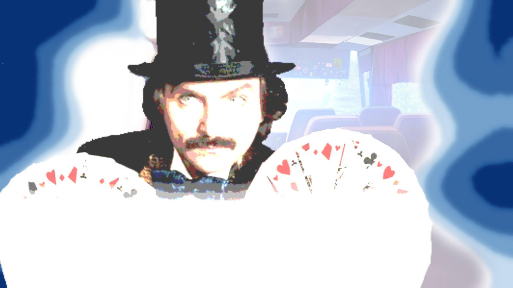

Очередная трактовка происхождения Юли и "Совенка"
7 дней лета :: Руты :: Юленька ака ЮВАО
Страница 11 из 14 •  1 ... 7 ... 10, 11, 12, 13, 14
1 ... 7 ... 10, 11, 12, 13, 14
Самый логичный вариант с вашей точки зрения
Re: Очередная трактовка происхождения Юли и "Совенка"
автор erinrandir в Вт 11 Ноя 2014 - 16:06
erinrandir- Хикка

- Сообщения : 194
Дата регистрации : 2014-11-10
Re: Очередная трактовка происхождения Юли и "Совенка"
автор Chess в Вт 11 Ноя 2014 - 16:08

Chess- Находка для шпиона

- Сообщения : 3798
Дата регистрации : 2014-10-05
Откуда : Город на краю света
Re: Очередная трактовка происхождения Юли и "Совенка"
автор erinrandir в Вт 11 Ноя 2014 - 16:08
Автор-кун, я не специалист в конструировании тандемов из миров, потому механику сего объяснить не могу. Хотя бы это возьмем как данность. Наоборот же упрощение - вместо скачка в параллельное прошлое - скачок в параллельное настоящее.
erinrandir- Хикка
- Сообщения : 194
Дата регистрации : 2014-11-10
Re: Очередная трактовка происхождения Юли и "Совенка"
автор peregarrett в Вт 11 Ноя 2014 - 16:34
7dl-kun пишет:Или Сэма всю дорогу окучивал один и тот же "маяк"
- КАЖЕТСЯ Я УПРЛС:

-Ты пойдешь со мной?

peregarrett- Находка для шпиона
- Сообщения : 3264
Дата регистрации : 2014-09-07
Возраст : 36
Re: Очередная трактовка происхождения Юли и "Совенка"
автор Chess в Вт 11 Ноя 2014 - 22:21
Chess- Находка для шпиона
- Сообщения : 3798
Дата регистрации : 2014-10-05
Откуда : Город на краю света
Re: Очередная трактовка происхождения Юли и "Совенка"
автор Гость в Ср 12 Ноя 2014 - 0:51
peregarrett пишет:7dl-kun пишет:Или Сэма всю дорогу окучивал один и тот же "маяк"
- КАЖЕТСЯ Я УПРЛС:
-Ты пойдешь со мной?
ГЕНИАЛЬНО!!!! Я ещё помню кто это...
Гость- Гость
Re: Очередная трактовка происхождения Юли и "Совенка"
автор Arlien в Ср 12 Ноя 2014 - 11:39
- Наука-аппрувед, рационалист-ориентед вариант объяснения Совенка, Юли и всего-всего-всего:
Предисловие-аннотация или минутка авторекламы
В этом варианте я постараюсь предложить максимально лаконичный и приближенный к РЛшным категориям вариант объяснения событий при сохранении их условной 'реальности' и, скажем так, личностной значимости, но при минимальном задействовании всякого рода элементов Х (читать как "Хэ") вроде прорывов в иные реальности, потустороних сущностей етц.
На самом деле ничего не имею против обсуждения проблемы построения спектроличностных прайдов в услових спонжево-древовидного мультиверсума, но это, кмк, не самым лучшим образом сочетается со сказкой про людские чувства.
Кратко-тезисно
1. Что такое Совёнок?
Это сон Семена. Или не совсем Семена, но просто сон.
2. Зачём он есть?
Затем же, зачем и прочие сны - для сохранения непрерывности сознания в периоды речаржа организма.
3. Что такое Юля?
Просто (или, возможно, не очень просто) человек, которму снится сон.
4. Зачем она?
Затем же, зачем и прочие персонажи - для акуитительной истории!
Звучит не очень впечатляюще? Возможно, дальше будет интересней.
Полуэлемент Хэ - о снах, людях, архетипах и квантовой запутанности
Вы уверены, что тот серенький прохожий, приснившийся вам на прошлой неделе, которого вы отметили на уровне силуэта и забыли раньше, чем проснулись, не был сорокадвухлетним водопроводчиком ВасильПетровичем из Уфы, которому опять, мать его, снится опостылевшая работа и новый заказ?..
Но ладно, начать надо все же с начала.
Полагаю, все тут знакомы со старым-добрым ощущением "взгляда в спину", да? Которое порою действительно совпадает с тем, что на вас кто-то смотрит? Довольно забавное явление, жаль, что малоизученное - по крайней мере мне не попадались его исследования уровнем выше полулюбительского.
Многие также, полагаю, слышали разные байки о том, как люди чувствовали беду, произошедшую с близкими, еще до того, как их извещали, про вещие сны и все такое.
Кто-то, возможно, еще и в курсе забавнейших кросс-рефренсов в мировых культурах - к примеру, рассказы о великом потопе имеются практически везде, даже в довольно изолированных от чужого фолклорного влияния местах. Плюс те же архетипы и т.д и т.п.
Собственно, мое объяснение "Совенка" строится на допущении, основанном на вышеобрисованных занятных феноменах - возможности прямого обмена информацией в рамках чего-то навроде ноосферы Леруа. Некоторые современные исследования мозговой активности косвенно указывают на использование в наших биокалькуляторах квантовых спутанностей - инфа, конечно, совсем не соточка, но вполне на уровне мультиверсума, прямо предсказываемого некоторыми серьезными физическими теориями, и технически вполне позволяет чувствовать чужое внимание спиной - или смотреть сон на семь персон.
И нет, я не предлагаю классический "мире снов", просто, скажем так, еще одну возможность межчеловеческого общения, электромагнитную, в дополнение к имеющимся вербальным, тактильным, химическим и прочим.
Возвращаясь к Совенку - что произошло?
Дрищ засыпает в автобусе. Табачок, плохое питание, сидячий образ жизни - здравствуй, аритмия.
Герк получает пулю в голову, с Локи тоже все плохо.
Так или иначе, ребята готовятся смотреть свой последний и самый яркий сон о своих самых светлых воспоминаниях - серьезные малфункции в организме такому способствуют.
Яркий-яркий сон длиною в неделю за пару часов? Полагаю, вполне возможно. Мой личный рекорд - примерно полтора дня за десять часов, доводилось слыхать и о большей компрессии, хоть инфа и не соточка.
В условной ноосфере создается "центр масс".
Где-то в глубинке Славя спит у себя дома. Может быть, она была в том самом Совенке лет в семь? Или уже потом бродила по заброшенному лагерю и представляла, как там было весело когда-то?
Центр масс обрастает новой драпировкой - Семеновский мозг в силу вышепредположенных малфункций плохо справляется с созданием большого массива образов и поэтому принимает экстерьерную работу от постороннего источника.
Тем временем Леночка прикорнула в пробке. Ей просто грустно и одиноко, ей хочется солнца, детства и романтики - а поблизости как раз образуется что-то такое.
Ульяна посмотрела "Спокойной ночи, малыши", поегозила и тоже заснула. Может, ей охота глянуть на энтот самый волшебный СССР, о котором часто ноет папка, когда напьется? Там, наверное, проказы в три раза веселей.
Где-то неподалеку дрыхнет простой хороший парень Ванька Петров. Ему вообще пофигу, ему снится, что он Электроник и он собирает робо-неку. Не самый странный в мире сон, поверьте. А Электроники в простом советском пионерлагере всегда пригодятся.
Студенту по кличке - а может и по имени - Шурик снится кошмар про подземелья и голоса, а прочие участники автоматически дорисовывают ему внешность "того самого" Шурика. Во сне собственное тело и всякие зеркала обычно эмулируются из рук вон плохо - слишком уж сложная штука.
И так далее, и тому подобное - даже злобной библиотекарше, в свое время заседавшей в фидонете, может сниться, что она библиотекарша, что, впрочем, никоим образом не обязывает считать всех участников реальными людьми - любой равновероятно может быть как и спящим человеком, так и картинкой, дорисованной "шобы была толпа, как положено".
Нота о механике снов
Предыдущая секция дает ответы на первые два обозначенных вопроса. Перед тем, как перейти к детальному рассмотрению Юли, стоит обговорить некоторые детали и дать ответы на возникающие вопросы. Я, увы, не дипломированный онейролог, так что вся терминология кустарна, все данные даны с известной степенью приближения.
1. Почему Семен "попаданец из будущего", а остальные реальные участники - нет?
Потому что у Семена включились цепи, отвечающие за осознанность сновидения, а у остальных - нет. Может быть банальной случайностью, может быть обусловлено аварийностью его ситуации.
И да, осознанный сон, который можно спусть с реальностью в силу его детализированности, яркости и реалистичности (пардон за тавтологию) - это конструкция не противоречивая, видал я и такое.
2. Если Семен видит осознанный сон, то почему не рулит им?
Потому что сон стал не только его - круговая порука-с, взаимное уравновешивание. Как осознанные попытки управления, так и проделки чьего-нибудь больного подсознания с дождем из горящих собак гасятся просто по факту, ибо "в МОЕМ сне такой фигни нет". Стандартное социальное отторжение в условиях псевдоноосферы, сээр.
3. А что же с царапинами в Мику-катапульте?..
Сам расцарапался. А скорее просто сон внутри сна - да-да, такое не только в инсепшоне бывает, довольно распространенная штука же - последний сон перед отключением сердца.
4. А что же с яркостью красок и ощущений в чудесном новом мире?
Проблема снов не в том, что они блеклы и ощущения там ниочень - проблема в блоках памяти, которые вообще сны в большинстве своем не записывают, а уж подробности вроде зелени травы и тем более не отложатся, плюс те же модули впечатлений работают вполоборота.
Мозг же с одной стороны бессознательный, а с другой - в лихорадочной активности борьбы за жизнь способен выдать необходимое, особенно если ресурсы расшарят другие подключенные. Краски можно позаимствовать у Лены, слух у Мики, нюх у Слави и т.д.
Юля, сон-с-зовущей-девочкой и последний шанс
Как минимум - просто еще один человечек, попавший в снежный ком Семеновского МЕГАСНА. Почему бы девочке с бабочками в головах и не посмотреть сон о том, как она нека и делает запасы на зиму?
Но оно не объясняет ни ее особого статуса, ни отсутствие коллективного зобана "у девочек не бывает кошачьих ушей", ни предыдущие сны, в которых она явно замешана.
Так что я предположу, что Юля - давнее знакомство Семена, скорее всего - откуда-то из детства. Достаточно давнее и достаточно короткое, чтобы иметь сложности с выводом в оперативную память, но достаточно яркое, чтобы отпечататься в подкорке и периодически отткуда всплывать во сне. Бывает и такое, старый Арли все видал.
Яркость впечатления при этом была взаимной, в результате чего Юлю и подтянуло в "снежный ком".
Что до особого статуса - тут может быть два взаимодополняющих объяснения.
Первое - Юля как часть воспоминаний Семена распознается мейнфреймом (основа феномена-то - именно Семен) как "своя", отчего ей позволяются некоторые вольности.
Второе - она, кгхм, как бы это сказать... Не в себе. Аутизм, возможно? Нестыковки в мыслительных процессах с одной стороны пассивно отторгают ее от основного действа, с другой - ограничивают возможности коллективного воздействия. Плюс оно может объяснить картины Леночки и всплывающие сцены в голове Семена - навык эдейтического восприятия тоже расшаривается?..
И "последний шанс" - ну, тут все довольно прозаично, кмк. Переживаемые во сне (в любом сне) события напрямую влияют на биохимию и общий тонус организма, что напрямую влияет на выживаемость.
Или, может быть, насколько экстраординарное погружение в себя - последний шанс вспомнить Юлю, которой, может быть, очень хочется, чтобы ее вспомнили?..
Подытоживая
не знаю уж, насколько оно будет полезно, учитывая, что все-все-все мне объяснить все же не удалось - с хронологией концовок есть некоторые проблемы, но по-моему теория получилась в достаточной мере занятной, чтобы ею поделиться)
Таки дела)
Arlien- Людовед

- Сообщения : 1322
Дата регистрации : 2014-09-08
Re: Очередная трактовка происхождения Юли и "Совенка"
автор erinrandir в Ср 12 Ноя 2014 - 11:42
erinrandir- Хикка
- Сообщения : 194
Дата регистрации : 2014-11-10
Re: Очередная трактовка происхождения Юли и "Совенка"
автор Arlien в Ср 12 Ноя 2014 - 11:51
Ну, надо понимать, что т.н. человеческая "реальность" с точки зрения той же физики - не более чем рассказ ну ооочень "по мотивам" объективно-реально идущих процессов.сделать "Совенок" реальным местом
Так ли важно, был ли выстроен "Совенок" из кирпича и дерева или из образов и ощущений, если его строили и в нем жили реальные люди?
Хотя спору нет, альт-СССР и просто реальность безо всякого брейнфака - очень притягательная альтернатива.
Arlien- Людовед
- Сообщения : 1322
Дата регистрации : 2014-09-08
Re: Очередная трактовка происхождения Юли и "Совенка"
автор erinrandir в Ср 12 Ноя 2014 - 11:55
erinrandir- Хикка
- Сообщения : 194
Дата регистрации : 2014-11-10
Re: Очередная трактовка происхождения Юли и "Совенка"
автор 7dl-kun в Ср 12 Ноя 2014 - 11:56
Топикстартеру: зачитал личку, в сценарий было бы неплохо допилить интриги.
P.S.:и я всё ещё считаю альт-СССР самой блестящей идеей из всех вышеописанных.

7dl-kun- Находка для шпиона
- Сообщения : 3026
Дата регистрации : 2014-09-07
Откуда : здесь столько наркоманов?
Re: Очередная трактовка происхождения Юли и "Совенка"
автор erinrandir в Ср 12 Ноя 2014 - 11:57
erinrandir- Хикка
- Сообщения : 194
Дата регистрации : 2014-11-10
Re: Очередная трактовка происхождения Юли и "Совенка"
автор peregarrett в Ср 12 Ноя 2014 - 12:04
- Сон, не сон:
peregarrett- Находка для шпиона
- Сообщения : 3264
Дата регистрации : 2014-09-07
Возраст : 36
Re: Очередная трактовка происхождения Юли и "Совенка"
автор Arlien в Ср 12 Ноя 2014 - 12:07
Пронесон -_-переварить.
Последний раз редактировалось: Arlien (Ср 12 Ноя 2014 - 12:09), всего редактировалось 1 раз(а)
Arlien- Людовед
- Сообщения : 1322
Дата регистрации : 2014-09-08
Re: Очередная трактовка происхождения Юли и "Совенка"
автор 7dl-kun в Ср 12 Ноя 2014 - 12:08
Смогу толком добраться до машины, авторизую, ноу проблем. А насчёт погрузки идей, существует целая куча альтернатив, если поискать. От лички и мейла до гуглдоков.erinrandir пишет:Топикстартер негодует из-за невозможности грузить автора идеями где-то кроме форума, напоминает про скайп и смиренно интересуется рекомендациями на тему нагнетания интриги.
К слову, в последних пишу сам, чтобы не держать на отдельной машине наработки по сценарию.
А по теме нагнетания интриги: если предельно упростить, то это тупо закон жанра, согласно которому нельзя давать читателю ответа до последнего момента. Можно давать ему намёки, давая возможность "почти догадаться". А если в результате окажется, что догадки ещё и неправильные - так вообще замечательно. Но это уже высший пилотаж, мне такое недоступно (=
7dl-kun- Находка для шпиона
- Сообщения : 3026
Дата регистрации : 2014-09-07
Откуда : здесь столько наркоманов?
Re: Очередная трактовка происхождения Юли и "Совенка"
автор 7dl-kun в Ср 12 Ноя 2014 - 12:10
Да нет, мы постфактум раскидали её функционал как спорадически возникающего атрибута аномалии. Есть прокол - есть Юля, нет прокола - нет Юли. То, как она выглядит, вина Семёна, и так далее.Arlien пишет:А альт-теория, если мне не изменяет память, застряла на Юле и сопряженных с нею вопросах?
7dl-kun- Находка для шпиона
- Сообщения : 3026
Дата регистрации : 2014-09-07
Откуда : здесь столько наркоманов?
Re: Очередная трактовка происхождения Юли и "Совенка"
автор erinrandir в Ср 12 Ноя 2014 - 12:13
erinrandir- Хикка
- Сообщения : 194
Дата регистрации : 2014-11-10
Re: Очередная трактовка происхождения Юли и "Совенка"
автор 7dl-kun в Ср 12 Ноя 2014 - 12:24
7dl-kun- Находка для шпиона
- Сообщения : 3026
Дата регистрации : 2014-09-07
Откуда : здесь столько наркоманов?
Re: Очередная трактовка происхождения Юли и "Совенка"
автор Chess в Ср 12 Ноя 2014 - 12:27
До выворачивающих строчек ещё довольно далеко.
Последний раз редактировалось: Chess (Ср 12 Ноя 2014 - 12:27), всего редактировалось 1 раз(а)
Chess- Находка для шпиона
- Сообщения : 3798
Дата регистрации : 2014-10-05
Откуда : Город на краю света
Re: Очередная трактовка происхождения Юли и "Совенка"
автор erinrandir в Ср 12 Ноя 2014 - 12:27
erinrandir- Хикка
- Сообщения : 194
Дата регистрации : 2014-11-10
Re: Очередная трактовка происхождения Юли и "Совенка"
автор 7dl-kun в Ср 12 Ноя 2014 - 12:29
7dl-kun- Находка для шпиона
- Сообщения : 3026
Дата регистрации : 2014-09-07
Откуда : здесь столько наркоманов?
Re: Очередная трактовка происхождения Юли и "Совенка"
автор peregarrett в Ср 12 Ноя 2014 - 12:45
Или продолжайте нагнетать, тогда мы будем подфлуживать в меру соображения и фантазии, и никакой ответственности не нести.
peregarrett- Находка для шпиона
- Сообщения : 3264
Дата регистрации : 2014-09-07
Возраст : 36
Re: Очередная трактовка происхождения Юли и "Совенка"
автор Arlien в Ср 12 Ноя 2014 - 13:02
Arlien- Людовед
- Сообщения : 1322
Дата регистрации : 2014-09-08
Re: Очередная трактовка происхождения Юли и "Совенка"
автор 7dl-kun в Ср 12 Ноя 2014 - 13:05
7dl-kun- Находка для шпиона
- Сообщения : 3026
Дата регистрации : 2014-09-07
Откуда : здесь столько наркоманов?
Re: Очередная трактовка происхождения Юли и "Совенка"
автор Arlien в Ср 12 Ноя 2014 - 13:20
Arlien- Людовед
- Сообщения : 1322
Дата регистрации : 2014-09-08
Страница 11 из 14 • 1 ... 7 ... 10, 11, 12, 13, 14
7 дней лета :: Руты :: Юленька ака ЮВАО